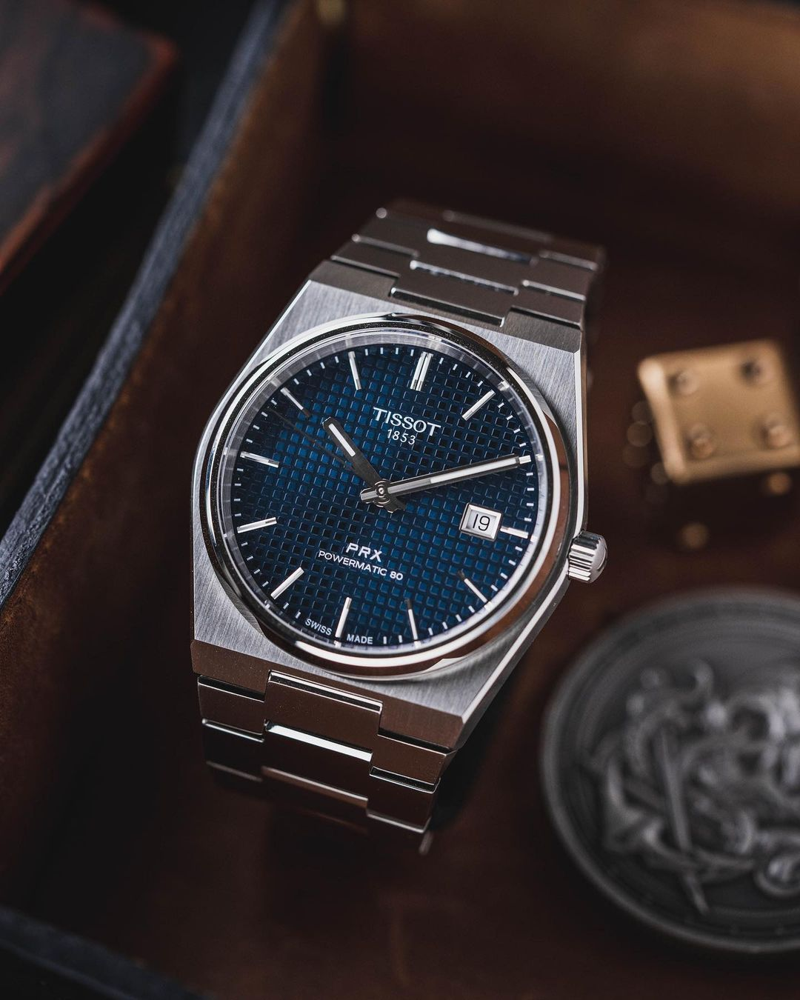

Tissot: Accessible Swiss Excellence
Published: August 2, 2025
Tissot, a part of the Swatch Group, has mastered the balance between affordability and precision. Known for models like the PRX, Le Locle, and Seastar, Tissot offers genuine Swiss-made quality without the hefty price tag.
With a heritage dating back to 1853, Tissot continues to evolve — embracing smart technology while staying true to its classic roots.
It's the ideal brand for both newcomers to watch collecting and veterans looking for reliable daily wearers.